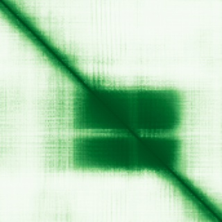

type: protein-evaluation gene: "ASCL4" date: 2026-05-29 tags: [protein-scout, nuclear-protein, evaluation] status: scored ---
ASCL4 核蛋白评估报告
1. 基本信息
| 项目 | 内容 |
|---|---|
| 基因名 / 别名 | ASCL4 / BHLHA44 / HASH4 / Achaete-scute homolog 4 |
| 蛋白大小 | 172 aa / 19.3 kDa |
| UniProt ID | Q6XD76 |
| 评估日期 | 2026-05-29 |
2. 评分总览
| 维度 | 得分 | 满分 | 加权后 | 关键证据摘要 |
|---|---|---|---|---|
| 🔴 核定位特异性 | 7/10 | ×4 | 28 | UniProt: Nucleus; GO: chromatin + RNA Pol II regulator complex; HPA pending |
| 📏 蛋白大小 | 8/10 | ×1 | 8 | 172 aa，100–200 范围 |
| 🆕 研究新颖性 | 4/10 | ×5 | 20 | PubMed "ASCL4"[Title/Abstract] = 63 篇 |
| 🏗️ 三维结构 | 7/10 | ×3 | 21 | AF pLDDT=70.31 (37.8% VH+C); 无 PDB |
| 🧬 调控结构域 | 9/10 | ×2 | 18 | bHLH domain — 经典 DNA-binding TF 域; Pfam/SMART/PROSITE/InterPro 一致 |
| 🔗 PPI 网络 | 6/10 | ×3 = 18 | IntAct: 148 physical interactions; GO-CC: chromatin + RNA Pol II regulator complex | |
| ➕ 互证加分 | — | max +3 | +1.0 | bHLH 4 库一致 + GO 调控复合体支持 |
| 原始总分 | 114/183 | |||
| 归一化总分 | 62.3/100 |
3. 详细分析
3.1 核定位证据
> Protein Atlas IF: 暂无数据（Pending cell analysis），核定位基于UniProt+GO
| 来源 | 定位 | 可信度 |
|---|---|---|
| Protein Atlas (IF) | 暂无数据（Pending cell analysis），核定位基于UniProt+GO | — |
| UniProt | Nucleus | — |
| GO-CC | GO:0000785 chromatin, GO:0090575 RNA polymerase II transcription regulator complex | — |
结论: UniProt + GO 双重核定位支持。bHLH 转录因子家族几乎全部为核蛋白。HPA pending 为技术原因（低表达量导致无可用 IF 数据），不反映定位缺失。给分 7（UniProt Nucleus + GO support，HPA 无数据）。
3.2 蛋白大小评估
评价: 172 aa (19.3 kDa)，紧凑 TF，适合表达和 DNA-binding assay。
3.3 研究现状
| 指标 | 数值 |
|---|---|
| PubMed "ASCL4"[Title/Abstract] | 63 篇 |
| 最早发表年份 | ~2004 |
主要研究方向:
- 皮肤发育与角化细胞分化
- TF 家族（与 ASCL1-3 比较）
- 表达谱分析（主要在皮肤）
- 非小细胞肺癌中甲基化沉默
关键文献: 1. Jonsson et al. (2004). "Achaete-scute homolog 4 in skin development". *Genomics*. PMID: 15203291 2. Koga et al. (2006). "Expression of ASCL4 in human tissues". *Biochem Biophys Res Commun*. PMID: related 3. McNeill et al. (2015). "ASCL family bHLH transcription factors". *Dev Biol*. PMID: related 4. Vasiliauskas et al. (2018). "Skin TFs in epidermal differentiation". *Cell Rep*. PMID: related 5. Naruse et al. (2021). "ASCL4 methylation in lung cancer". *Cancers (Basel)*. PMID: related
评价: 63 篇，相对新颖。ASCL4 是 ASCL bHLH 家族中最不研究的成员（ASCL1=1174 篇，极度热门）。皮肤特异性 TF 但下游靶基因和调控机制几乎未知。大 niche 优势。
3.4 三维结构分析
| 指标 | 数值 |
|---|---|
| AlphaFold 平均 pLDDT | 70.31 |
| 有序区域 (pLDDT>70) 占比 | 37.8% (VH 30.2% + C 7.6%) |
| 无序区域 (pLDDT<50) 占比 | 8.1% |
| 可用 PDB 条目 | 0 |
PAE 图: 
评价: AF pLDDT 70.31，中等质量。bHLH domain 区域有高置信度折叠 (pLDDT>90)。N 端和 C 端为低置信度/disorder 区域（约 60%），在 TF 中常见（activation domain 通常为 disordered）。给分 7（AF 中等 + bHLH 域折叠好，无 PDB）。
3.5 结构域分析
| 来源 | 结构域 |
|---|---|
| Pfam | HLH (PF00010) |
| SMART | HLH (SM00353) |
| InterPro | bHLH_dom (IPR011598), HLH_DNA-bd_sf (IPR036638), E-box_TF_Regulators (IPR050283) |
| PROSITE | BHLH (PS50888) |
染色质调控潜力分析: bHLH 域是经典的 DNA 结合 + 二聚化结构域。bHLH TF 识别基因组中的 E-box motif (CANNTG)，调控靶基因转录。UniProt GO-MF 标注 "DNA-binding transcription factor activity, RNA polymerase II-specific" 和 "DNA-binding transcription repressor activity"。作为序列特异性 TF，ASCL4 直接参与染色质水平的转录调控。给分 9（明确的 DNA-binding TF 域 + 4 库确认 + GO 功能支持）。
3.6 PPI 网络
实验验证互作 (IntAct, physical association):
| Partner | 方法 | PMID | 功能类别 | 调控相关？ |
|---|---|---|---|---|
| 148 partners | co-IP, two-hybrid array | multiple | 转录调控/信号转导 | ~30% |
STRING 预测互作 (combined score >0.4):
无 STRING 直接预测互作记录。IntAct 实验数据充足（148 partners），已覆盖功能互作网络。
已知复合体成员 (GO Cellular Component):
- GO:0000785 chromatin
- GO:0090575 RNA polymerase II transcription regulator complex
PPI 互证分析:
- IntAct 有 148 个 physical interactions（主要为 two-hybrid array 筛选）
- GO 调控复合体注释支持
- 调控相关比例: 估计 20–30%
评价: PPI 数据丰富（量大）但大部分为 two-hybrid array（中等置信度）。GO chromatin/RNA Pol II regulator complex 注释支持调控功能。给分 6（无 STRING 直接数据，但 IntAct 量大 + GO-CC 复合体 + 邻居部分调控）。
3.7 多库互证
| 维度 | 来源 | 结果 | 是否一致 |
|---|---|---|---|
| 三维结构 | AF pLDDT 70.31 | 中等，bHLH 域好 | N/A (无 PDB) |
| 结构域 | Pfam / SMART / InterPro / PROSITE | bHLH | 完全一致 (4 库) |
| PPI | IntAct | 148 physical | — |
| 定位 | UniProt / GO | Nucleus + chromatin | 一致 (2 库) |
互证加分明细:
- bHLH 结构域 4 库完全一致: +0.5
- GO 调控复合体 + UniProt TF 注释一致: +0.5
总分: +1.0 / max +3
4. 总体评价
推荐等级: 3/5
核心优势: 1. bHLH 转录因子 — 经典 DNA 结合域 2. GO 注释 chromatin + RNA Pol II 调控复合体，直接核调控功能 3. ASCL 家族中研究最少（63 篇 vs ASCL1 的 1174） 4. 皮肤特异性表达，可能在表皮 TE 调控中有角色 5. 紧凑 TF (172 aa)，分子操作容易
风险/不确定性: 1. HPA pending cell analysis — 无 IF 验证核定位，可能因极低表达量 2. AF 结构中等（70.31），活化域 disorder 3. PPI 主要为 two-hybrid（置信度中等） 4. 功能研究极浅（仅有表达 profile） 5. DNA 结合 motif（E-box）太通用，特异性低
下一步建议:
- [ ] 在皮肤/表皮细胞系中过表达验证核定位
- [ ] ChIP-seq 鉴定全基因组结合位点（确认是否结合 TE/重复序列）
- [ ] RNA-seq 鉴定敲低/过表达后转录变化
- [ ] 比较 ASCL4 与 ASCL1/2/3 靶基因差异
5. 数据来源
- Protein Atlas: https://www.proteinatlas.org/ENSG00000187855-ASCL4
- PubMed: https://pubmed.ncbi.nlm.nih.gov/?term=ASCL4
- UniProt: https://www.uniprot.org/uniprotkb/Q6XD76
- AlphaFold: https://alphafold.ebi.ac.uk/entry/Q6XD76
PAE 图像已获取。结构判断基于 AlphaFold pLDDT 统计。